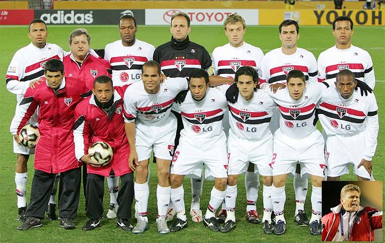

Mundial no Japão
A final do Campeonato Mundial de Clubes da FIFA de 2005 foi uma partida de futebol disputada entre a equipe brasileira do São Paulo, representante da CONMEBOL, e a equipe inglesa do Liverpool, representante da UEFA. Ela foi realizada no dia 18 de dezembro de 2005 no Estádio Internacional de Yokohama, na cidade de Yokohama, Japão, para decidir o vencedor do Campeonato Mundial de Clubes da FIFA de 2005. Este evento reuniu os vencedores das principais competições das associações continentais da FIFA. O São Paulo sagrou-se vencedor da Copa Intercontinental duas vezes consecutivas, em 1992 e 1993; já o Liverpool, perdeu as duas finais que participou, nos anos de 1981 e 1984.
